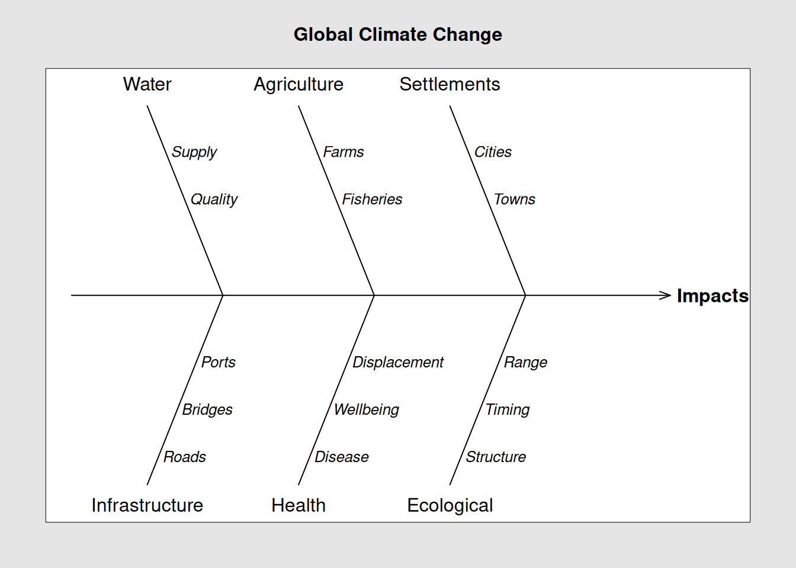

Glossary of terms frequently used in the context of Climate change
Definition of adaptation
Climate Change Adaptation (CCA) is on of the two central approaches in the international climate change process. The term refers to adjustment in natural or human systems in response to actual or expected climatic stimuli or their effects, which moderates harm or exploits opportunities. Potential beneficial opportunities associated with climate change are for example; longer growing seasons or increased yields in some regions. see Mitigation
Need for adaptation
The world’s climate is changing and will continue to change at rates unprecedented in recent human history. The risks associated with these changes are real and are already happening in many systems and sectors essential for human livelihood.
These include water resources, food security, coastal zones and health. Developing countries, especially those that are least developed are the most vulnerable to these risks.
In the most susceptible communities the impacts of climate change pose a direct threat to people’s very survival. The devastating effects of extreme events, temperature increases and sea level rise will worsen with consequences for all of us, particularly the poor.
Definition of Climate change impact
Climate change impacts refer to the effects of climate change on natural and human systems.
## Cause and Effect Diagram: Global Impact # load package## library(qcc)qcc::cause.and.effect (cause =list(Water =c("Supply", "Quality"),Agriculture =c("Farms", "Fisheries"),Settlements =c("Cities", "Towns"),Infrastructure =c("Roads","Bridges", "Ports"),Health =c("Disease", "Wellbeing", "Displacement"),Ecological =c( "Structure", "Timing", "Range")),title ="Global Climate Change",effect ="Impacts",cex =c(1, 0.8, 1), font =c(1, 3, 2))

Resilience
Resilience in the context of climate change refers to the ability of a social or ecological system to absorb disturbances while retaining the same basic structure and ways of functioning, the capacity for self-organisation, and the capacity to adapt to stress and change.
Vulnerability
Vulnerability in the context of climate change is the degree to which a system is susceptible to, and unable to cope with, adverse effects of climate change, including climate variability and extremes.
Climate variability
Climate variability is the way aspects of climate (such as temperature and precipitation) differ from an average. Climate variability occurs due to natural and sometimes periodic changes in the circulation of the air and ocean, volcanic eruptions, and other factors.
Climate variability is often natural, however climate change is causing an increase in the probability of many extreme weather events, and those events contribute to climate variability.
Climate mitigation
Defined as reducing the rate of climate change, involves stemming the flow of heat-trapping greenhouse gases into the atmosphere: Either by reducing sources of these gases (for example, the burning of fossil fuels for electricity, heat, or transport) or enhancing the “sinks” that accumulate and store these gases (such as the oceans, forests, and soil).